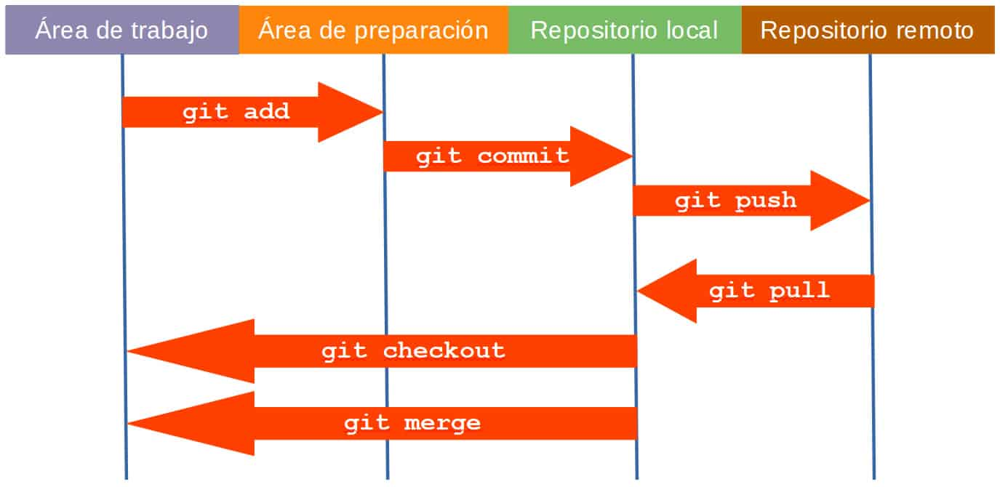

Características
Los sistemas de control de versiones como Git permiten a usuarios y equipos:
- Crear versiones de un proyecto.
- Realizar el seguimiento de los cambios y resolver conflictos.
- Fusionar cambios de varias fuentes en una versión común.
- Deshacer cambios en archivos seleccionados o en un proyecto completo.
- Acceder a versiones históricas de un proyecto para comparar los cambios a lo largo del tiempo.
- Ver quién modificó por última vez algo que podría estar causando un problema.
- Crear una copia de seguridad segura de un proyecto.
- Use múltiples máquinas para trabajar en un proyecto y mucho más.
Conceptos básicos
Repositorio: es el directorio donde se almacenan los archivos del proyecto y el historial de los cambios realizados. Puede estar en un servidor remoto como GitHub o GitLab o en un directorio local. Puede contener archivos de código, imágenes, audios o todo lo relacionado con el proyecto.
Commit: es el conjunto de los cambios (changeset) realizados en uno o varios archivos del proyecto que se confirman en el repositorio con un mensaje descriptivo y un autor. Cada confirmación es una instantánea del proyecto que no podrá ser modificada a no ser que se indique expresamente.
Rama: es un puntero a una de las instantáneas del repositorio. Proporciona una línea independiente de desarrollo con su propia historia de commits sin alterar los archivos de otras ramas. Suelen usarse para implementar nuevas funcionalidades sin afectar a la versión estable o rama principal (main branch) del proyecto.
Conflicto: sucede cuando se fusionan dos ramas que incluyen modificaciones en los mismos trozos de un fichero y Git no es capaz de elegir cuáles aplicar, requiriendo la intervención del usuario.
HEAD: también es un puntero, apunta al último commit de la actual rama de trabajo, salvo que se haya movido expresamente a una instantánea anterior.
Etiquetas: son punteros «con nombre» que apuntan a una instantánea concreta del historial de cambios. Suelen usarse para identificar las sucesivas versiones del proyecto.
Áreas de Git
Área de trabajo: es el directorio de nuestro proyecto con el estado actual de los ficheros que podemos visualizar desde el explorador de archivos. Se inicializa con el comando init.
Área de preparación: donde añadir los archivos que van a conformar un commit. Pueden ser ficheros completos o sólo partes concretas. Los archivos se añaden con el comando add.
Repositorio local: donde guardar cada commit a partir de los archivos añadidos al área de preparación. La información se guarda por defecto en el directorio .git del área de trabajo.
Repositorio remoto puede ser uno (por defecto se llama origin), o puede haber varios. Entre el repositorio local y los remotos se puede usar el comando push para enviar los cambios realizados localmente, o pull para descargar los últimos cambios disponibles.
Comandos y primeras configuraciones de Git:
.Configurar nombre de usuario y cuenta afiliada a Github
git config --global user.name "John Doe"
git config --global user.email johndoe@example.com
.Configurar para que el access token funcione por tiempo determinado
git config --global credential.helper wincred
.Configurar el tiempo de expiracion, en segundos
git config --global credential.helper 'cache --timeout=1800'
.Configurar git para que se quede esperando a cerrar visual para continuar
git config --global core.editor "code --wait"
.Ver valores de configuración
git config --list
.Ver archivo de configuracion
git config --global -e
.Configurar salto de linea para evitar conflictos
git config --global core.autocrlf true(windows)/input(linux)
.Abrir Visual Studio Code desde la carpeta en la que estemos parados
code .
.limpiar terminal
clear
En Visual Studio Code podemos activar la consola...
.Abrir terminal
ctrl + ñ
.Abrir Git bash para usar comandos
boton derecho sobre teminal > Git bash
Pasos en la creación de un repositorio:
.Crear repositorio en GitHub -url-
.Crear carpeta
.Se crean archivos dentro de la carpeta
.Se ubica dentro de la carpeta y se hace un init
git init
.Se establece el destino remoto de esa carpeta colocando la url del repositorio
git remote add origin -url del repositorio-
git remote -v comprueba el repositorio
.Se pueden seguir creando, modificando y eliminando archivos
Pasos para hacer un commit
.Se crean, modifican o eliminan archivos (Untracked files)
.Ver cambios hechos antes de usar 'add'
git diff
.Se agregan los archivos nuevos/ cambios realizados (Staged)
git add archivo.txt
o sino para gregar todos los archivos
git add .
.Si queremos quitar un archivo / dejar de tener en cuenta para commitear (Untracked)
git rm --cached file.txt
.Si queremos volver a la ultima modificacion de un estado anterior del archivo
git restore file2.txt
.Luego se realiza un commit para reversionar los archivos (Commit)
git commit -m "nombre de la version" Ej: "se actualizo la informacion del archivo 2"
.ver cambios luego del commit
git log
.para salir
:q
.ver cambios del commit en pocas lineas
git log --oneline
.Se suben los archivos al repositorio remoto (Remote) - debemos haber generado y configurado el repositorio remoto (git init)
git push nombreRemoto nombreRama
o
git push origin master/main
o
git push -u origin main
empuja los documentos al repositorio (-u establece que luego el push no requiera escribir 'origin main' a solo 'main')
.gitignore
La creacion de este archivo contendra informacion de datos que seran ignorados y evitara subir archivos y carpetas innecesarios
*.img, *.mp4
.env (carpeta de datos de usuario)
node_modules
.Se debe commitear la carpeta
Branches (Ramas)

.Para saber en que rama estamos parados
git branch
.Para cambiar a una rama nueva y/o crearla
git checkout -b ramaNueva
.Volviendo a la rama principal y mergeamos una rama secundaria (absorberla)
git checkout master
git merge ramaNueva
.Fusionar ramas con git merge
1. Posicionarse en la rama (Head ->)
git switch nombreRama
2. comando para absorber nuevos cambios de la rama
git merge nombreRama
3. Subir cambios
git push origin nombreRama
Otros:
git branch -M main establece main como rama principal
Glosario Consola (comando - descripcion)
pwd
.muestra la carpeta actual en la que nos encontramos
mkdir NombreNuevaCarpeta
.crea carpeta(directorio), ej. mkdir NuevaCarpeta
touch NombreArchivoNuevo
.crea archivo nuevos, p.ej. touch NuevoArchivo.txt
cat NombreDelArchivo
.nos permite ver el contenido de un archivo, p.ej. cat NuevoArchivo.txt
cd
.nos permite cambiarnos de carpeta, ej. cd c/NuevaCarpeta
cd ..
.regresa al directorio o carpeta superior
cd o cd ~
.nos lleva a la ruta del usuario.
cd /c
.nos vamos al disco C:/.
cd -
.nos lleva directamente al ultimo directorio visitado.
ls
.ver los archivos de la carpeta donde estamos actualmente.
ls -l:
.Ver todos los archivos como una lista en donde incluye el usuario, grupo, permisos sobre el archivo, tamaño, fecha y hora de creación.
ls -lh:
.Muestra la misma información que ls-l pero con unidades de tamaño, es decir, kb o mb.
ls -R:
.muestra el contenido de todos los sudirectorios de forma recursiva.
ls -S
.Ordena los resultados por tamaño de archivo.
rm
.Nos permite borrar un archivo o carpeta ej: rm NuevoArchivo.txt
rmdir nombreDelDirectorio/
.borrar un directorio: Solo funciona con directorios vacíos.
rm -r nombre de la carpeta/
.elimina carpeta y archivos dentro de ella de forma recursiva.
cp NombreArchivo NombreDelDirectorio
.copia un archivo.
mv “el directorio de donde queremos mover/el nombre del archivo” “el directorio hacia donde lo queremos mover”
.nos permite mover un archivo.
clear
.limpiar la pantalla.
history